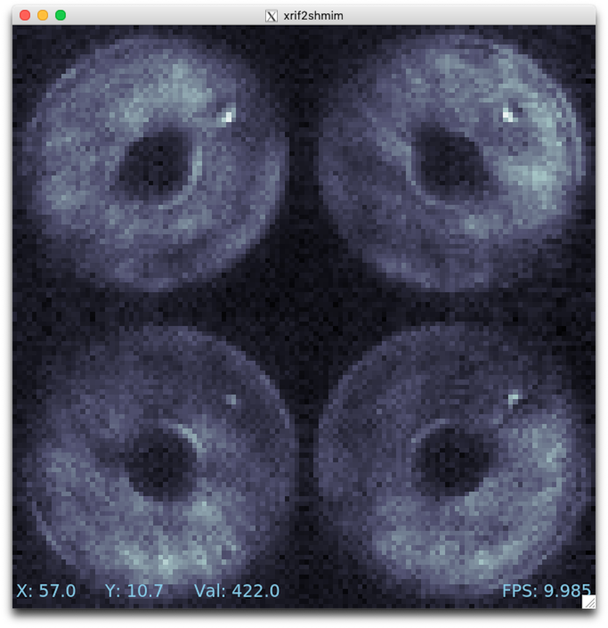

Developing in a virtual machine¶
The MagAO-X software is designed for use on Linux with CentOS 7 and Ubuntu 18.04, and the included provisioning script will automatically set up a fresh install on these operating systems (OSes).
If you’re on a Mac or Windows machine, or if you just want to keep MagAO-X isolated from the rest of your OS, you should use a virtual machine (VM). A virtual machine is a simulated computer (running whatever “guest OS” you like) that runs as a program on your computer’s OS (which we call the “host OS”).
Conceptually, you just create a virtual CentOS or Ubuntu computer and go through the normal installation process on it. To automate this process, and make certain customizations for speed and convenience, there’s Vagrant. Vagrant can start a virtual machine from a pre-made image, run your install script, and configure things like forwarding network ports from the VM to your host OS.
As it happens, MagAO-X has a Vagrantfile that defines two VM configurations, AOC (Ubuntu 18.04, the default) and ICC (CentOS 7).
Prerequisites¶
git— Preinstalled on most Linuxes, install withxcode-select --installon macOS, see below for WindowsVirtualBox — Preferred virtualization backend, available for free
Vagrant — Program to automate creation / provisioning of development VMs
NFS — available preinstalled on macOS and most Linux hosts (ICC guest on macOS and Linux hosts only)
Additional notes for Windows users¶
It’s probably easiest to get
gitfrom Anaconda if you’re already using it (useconda install gitat the Anaconda command line)gitneeds to be configured not to alter line endings. After installing git, you should dogit config --global core.autocrlf falsebefore cloning MagAOX. (However, if you usegitfor other things, you may not want this to be a global setting.)The existence of a
windows_host.txtadvisory file is required for provisioning to succeed. (Its presence tells the scripts to work around functionality that is missing on Windows hosts.)The section below on Using GUIs in the VM needs to be expanded with instructions for Windows. (Basically, we need to figure out which of the X11 servers for Windows works with
vagrant sshin the current configuration.) Until then, no GUIs in Windows.
Setup¶
Ensure
vagrantcommand is available:$ vagrant --help Usage: vagrant [options] <command> [<args>] ...
Clone magao-x/MagAOX (if necessary) and
cdinto MagAOX$ git clone https://github.com/magao-x/MagAOX.git Cloning into 'MagAOX'... ... $ cd MagAOX
Windows only: Create a new blank file named
windows_host.txtin the MagAOX folder.Run
vagrant up(orvagrant up ICC)$ vagrant up
If prompted, enter your password to configure NFS exports. (See this doc for information on eliminating that prompt.)
Note: The
vagrant upstep is CPU and bandwidth intensive the first time, as it will download an OS image and all of the MagAO-X dependencies, then compile them. Subsequentvagrant ups will just boot the existing machine.
Don’t be alarmed by the output from vagrant up. Provisioning is very noisy, and messages in red aren’t necessarily errors. Successful provisioning will end with the message
Provisioning complete
Usage¶
Connecting¶
To connect to the VM, use vagrant ssh. You’ll be logged in as user vagrant with no password. The rest of the commands in this section are to be run in a vagrant ssh session, unless otherwise noted.
Running MagAO-X¶
The magaox script is installed during provisioning, and a default set of (non-hardware-interfacing) apps is configured to run on magaox startup.
The proclist for VM usage is in magao-x/config/proclist_vm.txt.
Once magaox startup finishes, you can use getINDI to see the current set of properties from the INDI drivers started in the VM.
Try it and see:
$ magaox startup
Session isVM does not exist
Created tmux session 'isVM'
Executed in isVM session: /opt/MagAOX/bin/xindiserver -n isVM
Waiting 5 seconds for xindiserver...
...
$ getINDI
maths_y.fsm.state=READY
maths_y.maths.abs=0
maths_y.maths.prod=0
maths_y.maths.sqr=0
...
Network access¶
Aside from SSH, which is usually accomplished with vagrant ssh on the host (see their docs), there is also access to the VM on these ports:
7624 — INDI
8080 — HTTP (reserved for web UI, maps to guest port 80)
9999 — HTTP (JupyterLab)
These ports on localhost in the host OS are forwarded to their counterparts on the guest VM. (In other words, to connect to the INDI server on the VM port 7624, you connect to localhost:7624 on the host OS.)
JupyterLab¶
The VM automatically starts a JupyterLab instance on port 9999, running as the vagrant user. So, to quickly run Python code in the VM, open a browser in your host OS and enter http://localhost:9999. (The password is extremeAO!.)
This JupyterLab instance runs in the py37 conda environment created from the recipe in conda_env_py37.yml and instructions in create_conda_envs.sh. So, you should have packages like purepyindi and ImageStreamIOWrap already. (If you need a package that’s not there, sudo -i conda install NameOfPackage should fix it. Note the -i!)
Using GUIs in the VM¶
The VM is configured to be “headless”, meaning there’s no graphical display window. However, we can still build and run MagAO-X GUIs as long as your host OS has an X11 server (most Linux systems do by default, but you will need XQuartz on macOS).
If you’re unfamiliar with SSH X forwarding, the short version is that the app runs on the VM but the window pops up like any other window on your own computer (the host). SSH (i.e. vagrant ssh) is the transport that moves information about the window back and forth to the GUI app, which is still running inside the VM.
+------------------------------------------+
| +----------------------+|
| Host OS | VM ||
| | ||
| [GUI window] <-SSH-> [MagAO-X GUI app] ||
| +----------------------+|
+------------------------------------------+
So, to start the pwr GUI, you could do…
host$ vagrant ssh
vm$ cd /opt/MagAOX/source/MagAOX/gui/apps/pwr
vm$ make
vm$ ./bin/pwr
…and the power GUI will come up like any other window on your host machine.
The additional dependencies of the GUIs are tracked in magao-x/MagAOX/setup/steps/install_gui_dependencies.sh for both CentOS and Ubuntu, and are installed automatically when you provision the VM. (Something missing? Add the package name to the script and run vagrant provision from the host!)
Simulating image data streams¶
In operation, MagAO-X uses shared memory buffers (shared memory images, or ‘shmims’) to relay image data between different parts of the system. (This includes things like detector images, which you probably expected, but also things like DM commands, which you might not.)
The MagAO-X system software then streams these images to disk as as xrif files. The .xrif format is internal to MagAO-X, and was developed as a compromise between speed of write-out and compression ratio. It’s possible to play back an xrif file into a shmim to simulate a real instrument image data stream using the xrif2shmim utility.
Start by grabbing an example xrif file like camwfs_20190904220756666636000.xrif from Box under MagAO-X/example_data/ and save it somewhere on your host machine. To make it available in the VM, copy it into the folder where you cloned MagAOX. For example, if you cloned MagAOX to ~/devel/MagAOX/ on the host, copy the xrif to ~/devel/MagAOX/camwfs_20190904220756666636000.xrif.
Now, in your vagrant ssh session:
$ xrif2shmim /vagrant/camwfs_20190904220756666636000.xrif &
This creates a shmim called xrif2shmim that plays back the contents of /vagrant/camwfs_20190904220756666636000.xrif on a loop. (The & places the stream reader in the background.)
To see what it’s doing, you can use the rtimv image viewer installed in the VM:
$ rtimv xrif2shmim
You should see something like this:
example view of pyramid wfs data
Developing MagAO-X¶
The VM has a view of your copy of this repository under /vagrant. For example, no matter where you cloned this repository on your own (host) machine, the virtual machine will see this file at /vagrant/README.md. (For consistency with production, we symlink /opt/MagAOX/source/MagAOX to /vagrant.) Edits to the MagAO-X software source on your computer will be instantly reflected on the VM side, ready for you to make or make install in your ssh session.
There are some other paths under /opt/MagAOX that are also symlinked to the host under a folder named vm. (Note: Windows hosts don’t support this.)
For example, if you cloned from GitHub into /home/me/devel/MagAOX, the copy of the MagAO-X config files used by your VM would be in /home/me/devel/MagAOX/vm/config. (Unlike like the real instrument.)
The vagrant user you log in as with vagrant ssh will be a member of the magaox and magaox-dev groups following successful provisioning, and should have all the necessary permissions to run the system (or, at least, the parts you can run in a VM).